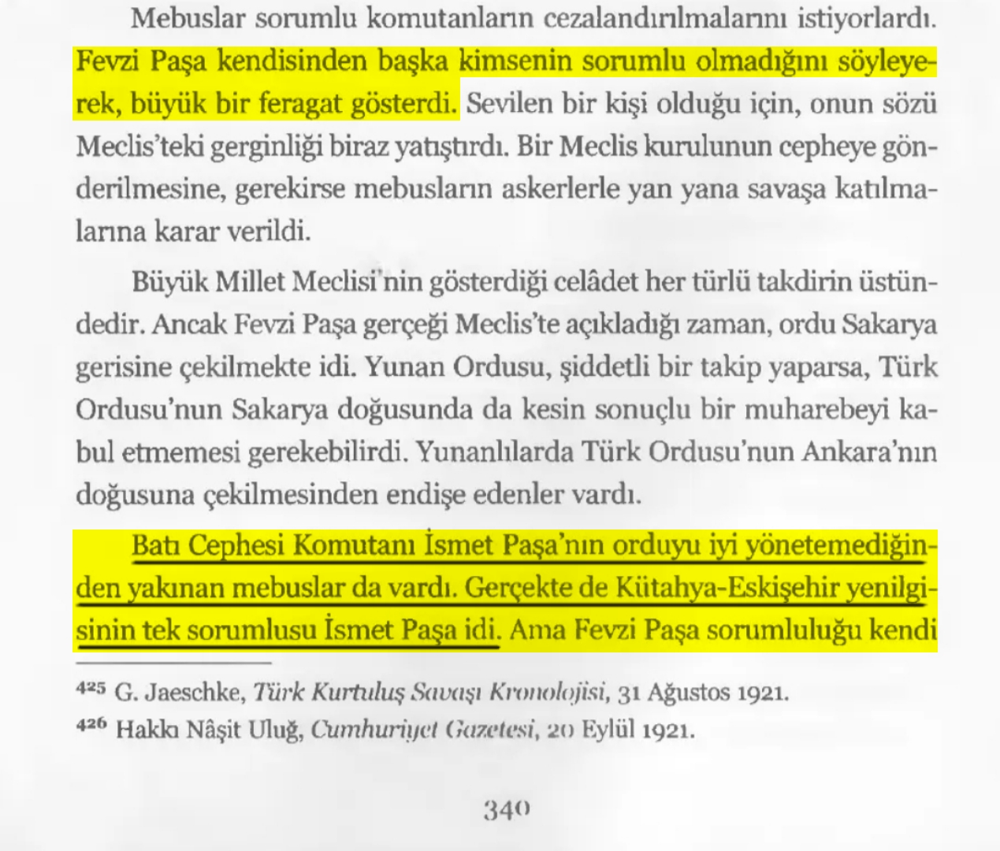
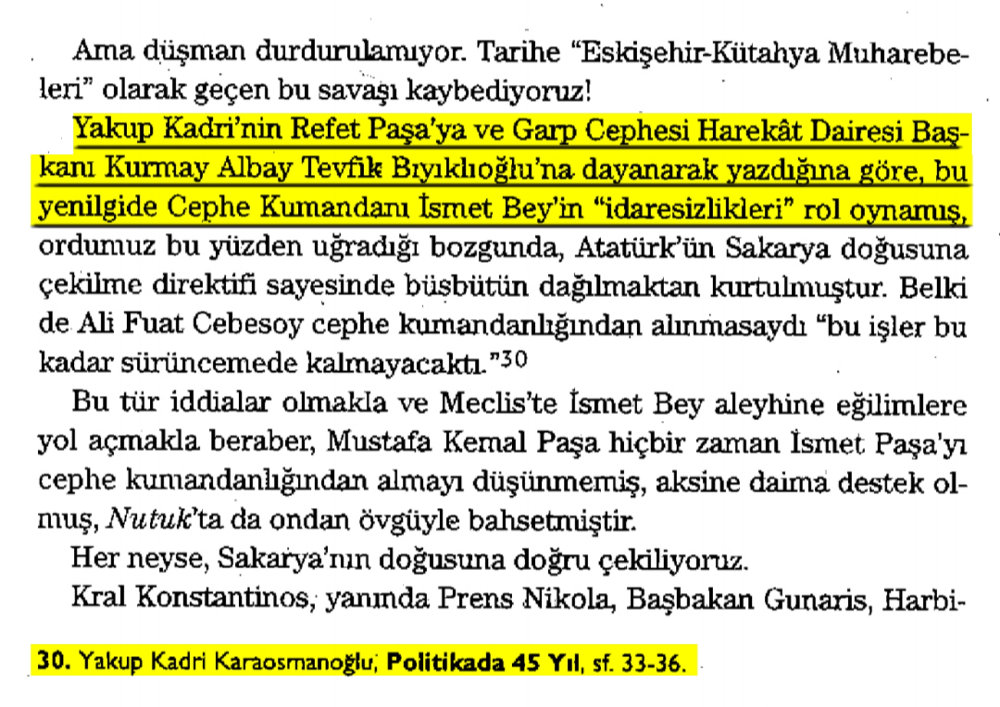
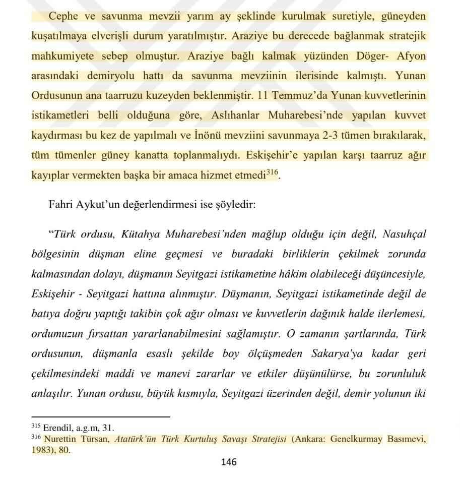
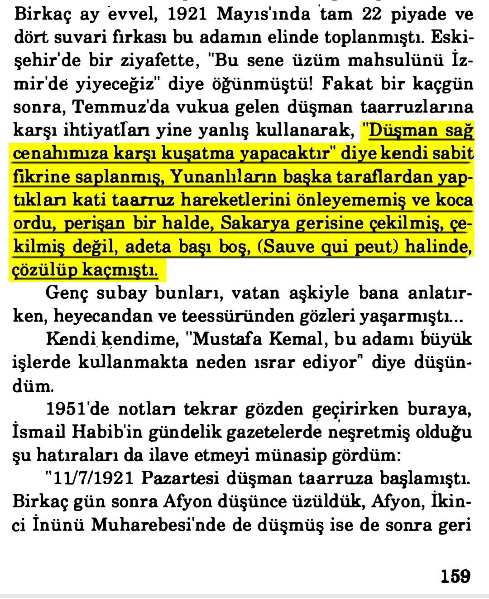
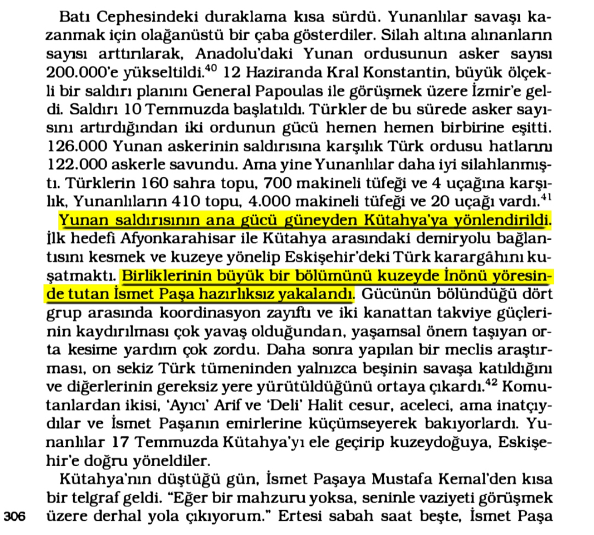
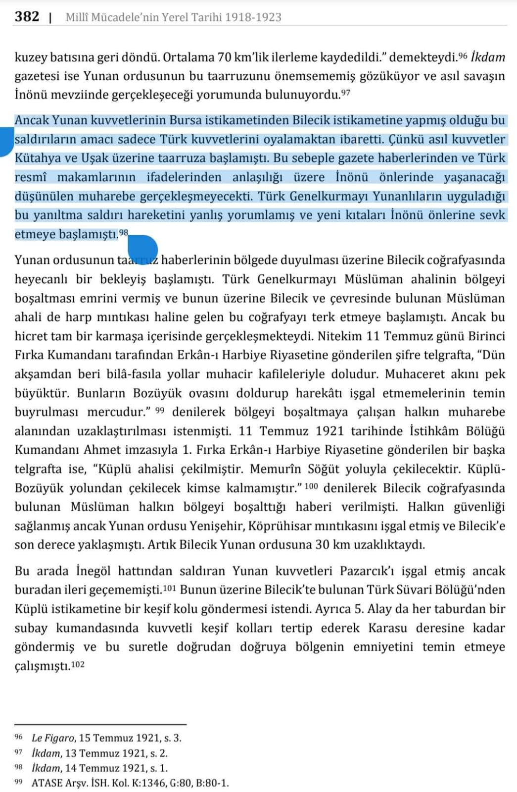
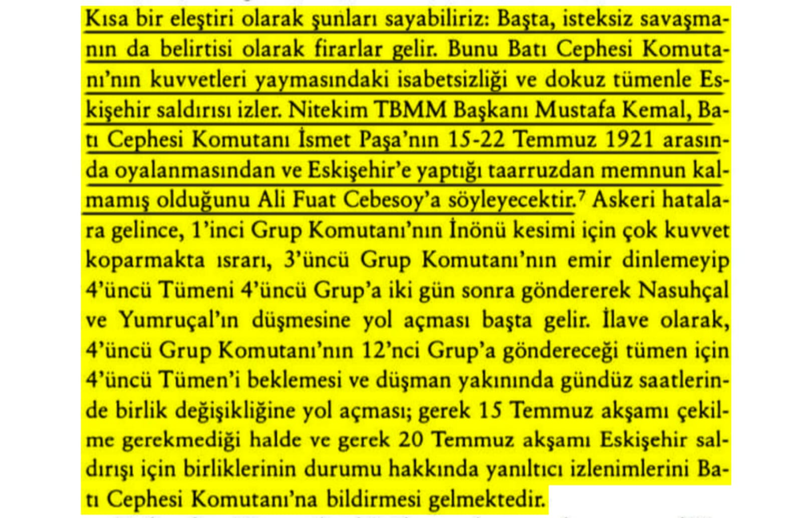
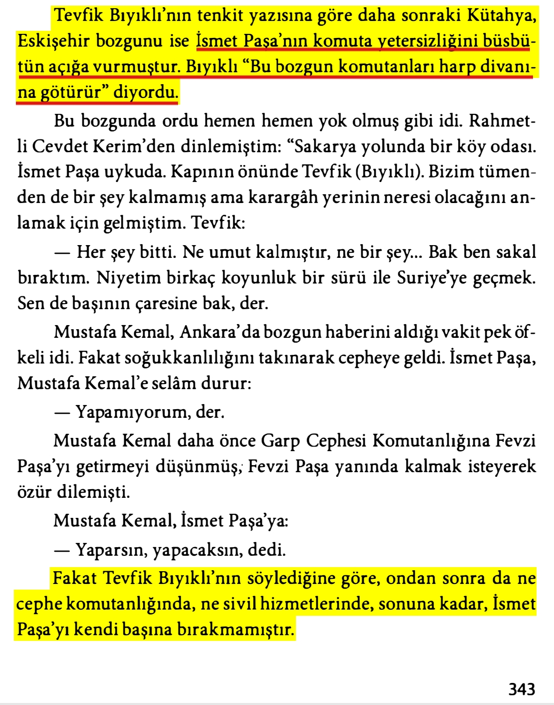

📌 *Gerçekte Kütahya-Eskişehir yenilgisinin tek sorumlusu İsmet Paşa idi.*📚 Fahri Belen, Türk Kurtuluş Savaşı, s.340

📌 *Yakup Kadri'nin Refet Paşa ve Tevfik Bıyıklıoğlu'na dayanarak hezimet hakkında yazdıkları.*📚 Yakup Kadri Karaosmanoğlu, Politikada 45 yıl, s.33-36.(Aktaran, Taha Akyol, Ama Hangi Atatürk, s.313)

📌 *Yunan kuvvetlerinin kuzeyden geleceğini düşünüp güneyden gelen orduya karşı ters köşe olmak.*📚 Ferdi Çakmak, Kütahya Eskişehir Muharebeleri, s.146
(Dipnot, Atatürk'ün Türk Kurtuluş Savaşı Stratejisi, Ankara Genelkurmay Basımevi 1983, s.80)

📌 *Ali İhsan Sabis'in eleştirisi.*📚 Ali İhsan Sabis, Harp Hatıralatım, Cilt 5, s.159

📌 *Birliklerinin büyük bir bölümünü kuzeyde İnönü yöresinde tutan İsmet Paşa hazırlıksız yakalandı.*📚 Andrew Mango, Atatürk, s.306

📌 *Türk Genelkurmayı'nın Yunan saldırısını yanlış yorumlaması.*📚 Milli Mücadele'nin Yerel Tarihi, Cilt 3, s.382 (Dipnot, İkdam Gazetesi, 14 Temmuz 1921, s.1)

📌 *Mustafa Kemal'in İsmet Paşa'nın oyalanmasından ve Eskişehir taaruzundan memnun kalmaması.*📚 Celal Erikan, Kurtuluş Savaşı Tarihi, s.231

📌 *Tevfik Bıyıklı'nın tenkit yazısına göre daha sonraki Kütahya-Eskişehir bozgunu ise İsmet Paşa'nın komuta yetersizliğini büsbütün açığa vurmuştur. Savaştan sonra Mustafa Kemal İsmet Paşa'yı kendi başına bırakmamıştır.*📚 Falih Rıfkı Atay, Çankaya, s.343